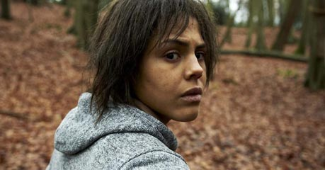
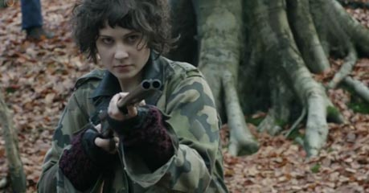
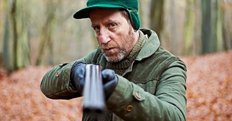

Personajes más Importantes de White Bear
White Bear, en español llamado Oso blanco, es el segundo episodio de la segunda temporada de la serie de ciencia ficción distópica británica Black Mirror, y el quinto de la serie en general. Escrito por el creador de la serie, Charlie Brooker, está dirigido por Carl Tibbetts y se estrenado el 18 de febrero de 2013 en Channel 4. En este episodio se nos presenta a una mujer que despierta en un lugar desconocido y sin saber lo que sucede, pero aparentemente las personas han sido controladas por una señal y ahora graban todo con sus dispositivos móviles, en su intento por descubrir su verdadera identidad nuestra protagonista se encuentra con diversos personajes, te invitamos a conocer los más importantes:

Victoria Skillane
Interpretada por Lenora Crichlow, es el personaje principal y al mismo tiempo antagonista de White Bear. Victoria se despierta en una casa sin memoria alguna de lo sucedido hasta ese punto, al salir es atacada por un hombre desconocido y es ignorada por el resto de las persona presentes que se limitan a grabar la situación. Victoria es presentada como un personaje confundido y temeroso que busca descubrir su identidad

Jem
Jem es una de las supervivientes que ayuda a Victoria a huir, interpretada por la actriz Tuppence Middleton, Jem es de las primeras personas con las que se encuentra Victoria mientras huía, ella le explica que la población había sido hipnotizada por una señal y los que no habían sido afectados se dedicaban a cometer crímenes. Más adelante nos enteramos de que Jem en realidad es miembro del personal del Parque Oso Blanco y su verdadera finalidad no era la que parecía.

Baxter
Baxter (Michael Smiley) se presenta como una de las personas que no es afectada por la señal que hace que graben a los demás, él ayuda a Victoria y a Jem al inicio pero luego las traiciona, amenazandolas con una escopeta y dirigiendo a ambas a un bosque para torturarlas y matarlas. Al final del episodio se revela que en realidad Baxter es el presentador del espectáculo del Parque de Justicia Oso Blanco y que es el responsable de la perdida de memoria de Victoria.